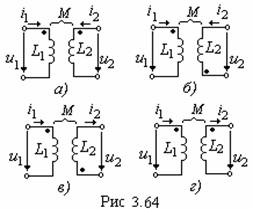

3.6.5. Меры оценки магнитной связи катушек
При согласном включении двух катушек поток взаимоиндукции соседней катушки усиливает общий магнитный поток катушки, при встречном же включении он его ослабляет. На электрических схемах вид включения катушек обозначают точками (символами *, Δ или ∝ и т. д. для более двух связанных катушек). Эти символы проставляют около пары одноименных зажимов таким образом, что при одинаковых относительно этих зажимов направлениях токов катушек магнитные потоки самоиндукции и взаимоиндукции в каждой из них суммируются.
На рис. 3.64 представлены схемы согласного (а и в) и встречного (б и г) включения двух катушек.
Из выражения (3.99) можно определить пределы, в которых изменяется взаимная индуктивность:
|
|||||